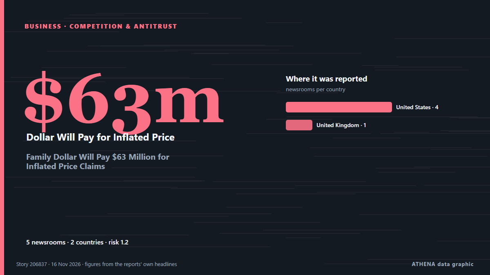

Entreprises et investissement
SponsoriséPrésenté par  Cybernetics and Artificial Intelligence Lab Welcome to the Cybernetics and Artificial Intelligence Laboratory, established at the Department of Business Administration of the National and Kapodistrian University of Athens. The lab is headed by Professor Dimitrios Thomakos. The lab aims to do research that can be published in top venues. Our research uses tools and methods of Artificial Intelligence, and lies in the following areas: - Forecasting - Decision making - Cyber security - Finance We are always looking forward to collaborating with exceptional students!
Cybernetics and Artificial Intelligence Lab Welcome to the Cybernetics and Artificial Intelligence Laboratory, established at the Department of Business Administration of the National and Kapodistrian University of Athens. The lab is headed by Professor Dimitrios Thomakos. The lab aims to do research that can be published in top venues. Our research uses tools and methods of Artificial Intelligence, and lies in the following areas: - Forecasting - Decision making - Cyber security - Finance We are always looking forward to collaborating with exceptional students!
Les titres sont affichés en anglais, tels que publiés.

ConcurrenceFamily Dollar Will Pay $63 Million for Inflated Price Claims
Dollar-store chain’s settlement with FTC and state officials comes after Guardian exposé of its pricing practices Discount store giant Family Dollar will pay $63m to settle claims by state and… de Guardian Business
| 3 nov. | 111 |
|---|---|
| 4 nov. | 111 |
| 5 nov. | 111 |
| 6 nov. | 77 |
| 7 nov. | 33 |
| 8 nov. | 58 |
| 9 nov. | 108 |
| 10 nov. | 122 |
| 11 nov. | 101 |
| 12 nov. | 95 |
| 13 nov. | 63 |
| 14 nov. | 35 |
| 15 nov. | 29 |
| 16 nov. | 38 |
China's fixed-asset investment down 8.1 pct in first 10 months
A deepening reliance on external demand leaves China more exposed to shocks abroad as domestic momentum fades, analysts say. de CNBC World
Egypt puts first two Alstom trains into service on Cairo Metro Line 1
Egypt has put the first two new air-conditioned trains into service on Cairo Metro Line 1, marking the start of deliveries under a contract with French company Alstom to supply 55 trains as part of a… de Daily News Egypt
Hungary plans to complete Paks II audit by year-end
Attila Sagodi, chairman of the board and CEO of Paks II, said Hungary’s new government is very interested in the project, but decision-makers do not yet have all the information they need. de TASS (English)
EU gives green light to UniCredit's takeover of Commerzbank
(ANSA) - BRUSSELS, 16 NOV - The European Commission said Monday that it has unconditionally given the green light to UniCredit's hostile takeover of Germany's Commerzbank. de ANSA English
Port of Blyth Unveils $265M Offshore Wind Expansion Plan
The UK's Port of Blyth has unveiled plans for an investment program of up to $264.5 million (£200 million) to expand its infrastructure and capacity to support offshore wind and clean energy… de MarineLink
European Commission partially greenlights Romania’s fifth PNRR payment request, 6 milestones not fulfilled
The European Commission partially greenlit Romania's fifth payment request worth EUR 2.67 billion under the Recovery and Resilience Facility (RRF) on Monday, November 16. de Romania Insider
India's Hindustan Zinc to nearly double metal production capacity in $8.5 billion push
India’s Hindustan Zinc said on Monday it plans to invest about 800 billion rupees ($8.50 billion) over the next three to five years to nearly double its metal production capacity, as it looks to… de Business Recorder
Sofinnova closes second crossover fund at €725M for late-stage European biotechs
Sofinnova Partners has secured €725 million ($815 million) for its second crossover fund, which it said would fill the financing gap for late-stage European biopharma and medtech companies. de Endpoints News
Greece Plans New Funding to Modernize Street Markets
Development Minister Takis Theodorikakos says new financial support is being considered to help vendors upgrade equipment, cut operating costs and adapt to the green transition. de to vima
Venezuela Plans Colombia Gas Exports from Perla Offshore Field
About 65 million cubic feet per day of incremental gas production expected at Venezuela's Perla offshore project will be exported to Colombia via a pipeline currently in repair… de Offshore Engineer
Shell Egypt Starts Gas at Mina West Field
Shell Egypt started production at Mina West in the Mediterranean on 15 November 2026, aiming for 160 million standard cubic feet a day. de The Rio Times
New mobile phone cameras on the way
New cameras to catch drivers on their phones are being installed in Adelaide. de Sydney Morning Herald
Herald afternoon quiz: November 16
Test your brain with the Herald's afternoon quiz. de New Zealand Herald
Bessent calls for ‘dramatic shakeup’ at Nvidia, urges outside CEO
Bessent has criticized Howard Lutnick’s department over suspected chip diversion to China while defending President Donald Trump’s handling of the matter. de CNBC World
Malawi brewer Castel faces 100 job cuts as union seeks help
Castel Malawi, the country’s second-largest taxpayer, is on the verge of retrenching 100 employees, citing a challenging business operating environment that management says has continued to affect… de Nyasa Times
New Zealand services sector activity hits over 3.5-year high: survey
A services reading at a multi-year high, led by new orders, strengthens the case that New Zealand’s recovery is spreading beyond a handful of sectors. de investingLive (ForexLive)
Bharat Semi raises $24 million to develop intelligent sensors for AI
The India- and US-based startup is developing programmable sensors that integrate sensing and AI, targeting applications across robotics, vehicles, drones and consumer electronics. de Business Standard
NBI to launch public complaints hotline in December
The National Bureau of Investigation (NBI) is preparing to launch a public hotline in December to make it easier for Filipinos to report crimes and submit… de Daily Tribune
Yang Ming Marine Transport Sees Strong Revenue and Profit Growth in Q3 2026
Yang Ming Marine Transport reports significant revenue and profit growth for the first three quarters of 2026, driven by strong demand and peak-season momentum. de SeaNews Türkiye
‘Corrupt contractor’ behind Pilbara bribe allegations still working on Big Build
A stinging report from a corruption watchdog, followed by charges, has not impeded the company’s place on Victoria’s major infrastructure program. de Sydney Morning Herald
Sold-out Angkor Wat race reinforces smoke-free commitment
The 31st Angkor Wat International Half Marathon will be a smoke-free and e-cigarette-free sporting event, with organisers warning participants and businesses against using the occasion to promote… de Khmer Times
DICT flags AI cyber risks to ASEAN summit
The Department of Information and Communications Technology (DICT) is pushing for tighter cybersecurity defenses across ASEAN summit venues as artificial… de Daily Tribune
Sabarimala pilgrims can now send prasadam home through India Post
Thiruvananthapuram: Devotees visiting Sabarimala will soon be able to send Aravana Payasam and other temple offerings to their homes through India Post, which is setting up a round-the-clock special… de Deccan Herald
Oman, Uzbekistan to expand trade and investment ties
MUSCAT: Economic relations between the Sultanate of Oman and Uzbekistan are entering a new phase of growth, driven by strong political will and a shared ambition to expand trade, i... de Oman Observer
Chinese groups showcase culture, technology at London Lord Mayor's Show
Bronek Masojada had a reputation as a tough leader in the insurance world he worked in for three decades. de Insurance Journal
'Vietnamese and Japanese people are a great match': Kanagawa governor
Governor Yuji Kuroiwa of Japan’s Kanagawa Prefecture believes Vietnamese and Japanese people are a great match, drawing on more than a decade of personal engagement with Vietnam, as the prefecture… de Tuoi Tre News
UAE insurers must cover organ transplants and complications for life
In a landmark development set to reshape the healthcare and insurance sectors in the United Arab Emirates, the Central Bank of the UAE (CBUAE) has issued a binding circular to all health insurance… de Gulf News
APEC 2026 | All eyes on the Asia-Pacific
China will host the 33rd Asia-Pacific Economic Cooperation (APEC) Economic Leaders' Meeting – under the theme of "Building an Asia-Pacific Community to Prosper Together" – on November 18 and 19 in… de CGTN (China)
NCCIA cracks down on illegal call centres, gambling apps
ISLAMABAD: The National Cyber Crime Investigation Agency (NCCIA) has tightened the noose around elements involved in online gambling, operating betting applications and running illegal call centres. de Business Recorder